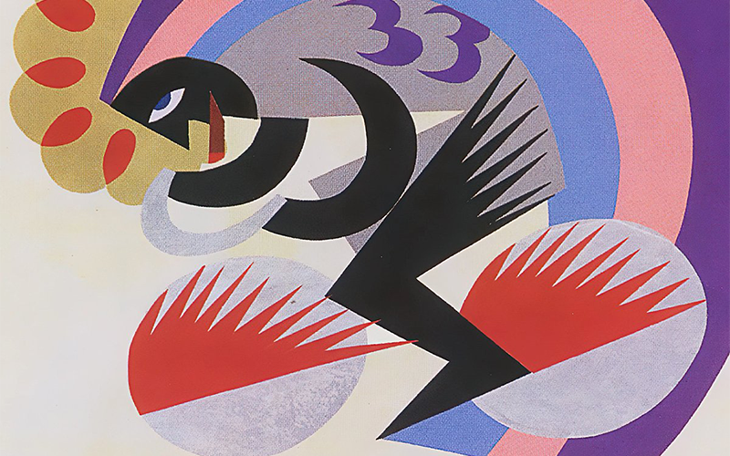

El futurismo fue un movimiento de vanguardia italiano que se dio a conocer el 20 de febrero de 1909, cuando el diario Le Fígaro publicó en París el Manifiesto futurista, escrito por el poeta Filippo Tommaso Marinetti. Pretendía expresar los valores y experiencias de la era de la máquina —velocidad, energía y fuerza—, revolucionando las técnicas y el lenguaje de la literatura y las artes. Por ello, asumió como nombre el término futurismo, que significa 'movimiento orientado hacia el futuro'.
Nace como un movimiento literario, pero un año después de la publicación del manifiesto, el futurismo se cuela entre los artistas italianos, que, imitando a su fundador, se expresan en la publicación de varios manifiestos. A saber: Manifiesto de los pintores futuristas (1910); Manifiesto de la escultura futurista (1912); Manifiesto El arte entre los ruidos, dedicado a la música (1912), y Manifiesto de la arquitectura futurista (1914).
Aunque el futurismo fue un movimiento italiano, ejerció un importante impacto internacional gracias a su capacidad de autopromoción y su radicalidad. Influyó en artistas como Marcel Duchamp y Joseph Stella, este último radicado en Nueva York. Del mismo modo, influyó en tendencias como el cubofuturismo y el rayonismo ruso.

RUPTURA CON LA TRADUCCIÓN ESTÉTICA
El rechazo a la tradición estética del siglo XIX fue un elemento común de todos los movimientos de vanguardia, incluido el futurismo. Aquella generación estaba cansada de la estandarización del arte, y captaba que el mundo había cambiado. El arte debía cambiar también.
CELEBRACIÓN DE LA ERA DE LA MÁQUINA
El futurismo se gestó en las postrimerías de una generación signada por la Segunda Revolución Industrial (1870-1914), en la que la dupla conocimiento científico y tecnología era responsable de una profunda transformación. Había quienes veían esto con desconfianza; pero los futuristas veían el augurio de un tiempo glorioso dominado por la máquina.
La utopía futurista alcanzaba, incluso, la idea del ser humano, que aspiraban se convirtiera en un superhombre. Automóviles, telégrafos y aviones lucían ante los futuristas como un verdadero salto cualitativo de la civilización, como una promesa universal inagotable de evolución.
INQUIETUD POR LA CUARTA DIMENSIÓN (EL TIEMPO)
El tiempo ocupa un papel protagónico en el arte futurista. No puede ser de otro modo si el movimiento funda su nombre en la dialéctica del tiempo. Asumir como nombre el término "futurismo" implica una reflexión respecto del pasado y del presente.
Sin embargo, no queda claro si la mirada del futurismo estaba en el porvenir o en una toma de posición respecto del pasado. Al menos en cuanto a la pintura, el historiador Eric Hosbbamw señala que esta y otras vanguardias, adolecieron de una gran paradoja: interpretar la era del maquinismo con medios pictóricos del siglo XIX, como la pintura de caballete.
¿Cómo expresar la era de la máquina en el arte? La máquina significaba para los futuristas movimiento, revolución en su sentido técnico y social a la vez. Por esto, pretendieron interpretar el movimiento y la velocidad en la obra artística, ya en el lienzo, en la materia o en la palabra. Lo mismo ocurría con la energía y la expresión de la fuerza. El objetivo era captar la forma de la velocidad descrita en el espacio, el ritmo y la vitalidad.
Sin embargo, de acuerdo al investigador Richard Humphreys en su libro Futurismo: movimientos en el arte moderno, el futurismo quiere expresar la velocidad y el movimiento, pero pocas veces las máquinas se encuentran representadas en sus obras.
DIÁLOGO CON OTRAS ESTÉTICAS Y VANGUARDIAS
El futurismo no permaneció ajeno a las influencias del arte y la estética contemporáneos. En el Diccionario del arte del siglo XX, Ian Chilvers sostiene que, en cuanto a las artes plásticas, el futurismo recibió la influencia del divisionismo, basado en la descomposición de la imagen en puntos de color, y del cubismo, que incorporaba múltiples planos en uno solo.